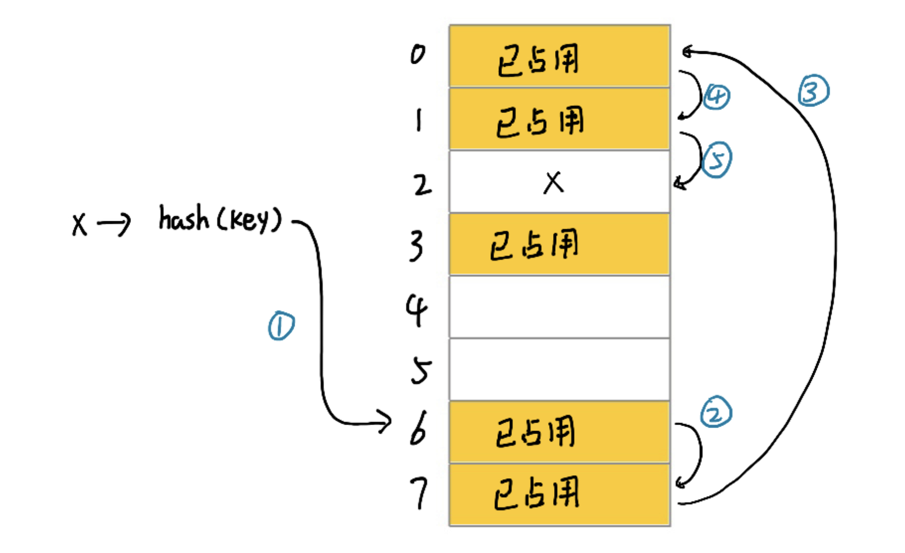

散列表
散列表英文叫“Hash Table”，平常也叫“哈希表”。散列表利用的是数组支持按照下标随机访问数据的特性，所以散列表其实就是数组的一种扩展，有数组演化而来。
散列表通过散列函数将键值映射为下标，然后将数据存储在数组中对应下标的位置。当按照键值查找元素的时候，用同样的散列函数将键值转化为数组下标，从对应的数组下标的位置取出数据。
散列函数
散列函数在散列表中至关重要，通常该函数定义为hash(key)，其中key表示元素的键值，hash(key)的值表示经过散列函数计算得到的散列值。
散列函数有三点基本要求：
-
散列函数计算得到的散列值是一个非负数
这是因为数组的下标从
0开始。 -
相同的键值经计算后得到的散列值是一样的
如果两次散列的结果不一样，散列表就无法正常工作。
-
不同的键值计算后得到的散列值不一样
这是理想情况下的要求。在现实生活中几乎找不到一个不同的键值对应的散列值都不一样的散列函数。即使是广为使用的
MD5、SHA、CRC等哈希算法也无法完全避免这种散列冲突。
散列冲突
再好的散列函数也无法避免散列冲突。常用的散列冲突解决方法有两类，开放寻址法（open addressing）和链表法（chaining）。
开放寻址法
开放寻址法的核心思想是，如果出现了散列冲突，就重新探测一个空闲位置。
线性探测是比较简单的一种探测方法。在插入数据的过程中，如果某个键值计算后的散列值对应的位置已被占用，就从当前位置开始往后依次查找到空闲位置为止。

查找和插入的时候类似。从计算出的散列值对应的位置开始往后查找直到遇到未被占用的空间（表示没有要查找的值）或者找到对应的值。

由于在查找的时候，未占用位置会终止查找，所以在删除数据的时候如果知识简单地只删除对应的数据会导致查找失效。所以一般不删除数据而是标记为deleted以确保查找正常。
可见，线性探测存在很大的问题。当散列表中插入的数据越来越多时，散列冲突发生的可能性就会越来越大，空闲位置会越来越少，线性探测的时间就会越来越久。极端情况下可能需要探测整个散列表，所以最坏情况下时间复杂度为O(n)。同理，删除的时候最坏时间复杂度为O(n)。
除了线性探测，还有另外两种比较经典的探测方法，二次探测（Quadratic probing）和双重散列（Double hashing）。但不管采用哪种探测方法，当散列表中空闲位置不多的时候，散列冲突的概率就会大大提高。为了尽可能保证散列表的操作效率，一般情况下会尽量保证散列表中有一定比例的空槽位。装载因子用来表示空位的多少。散列表的装载因子 = 填入表中的元素个数/散列表的长度，装载因子越大，说明空闲位置越少，冲突越多，散列表的性能会下降。
链表法
链表法是一种更加常用的散列冲突解决方法。相比开放寻址法，它要简单得多。图中的散列表，每个buckets（桶）或者叫“槽（slot）”会对应一条链表，所有散列值相同的元素都放到相同槽位对应的链表中。

当插入的时候，只需要通过散列函数计算出对应的散列操作，将其插入到对应的链表中，因此插入的时间复杂度为O(1)。当查找、删除一个元素时，同样通过散列函数计算出对应的槽位，但链表部分查找的时间复杂度为O(k)。其中k为链表的长度，理想情况下k=数据量/buckets数量。所以查找的时间复杂度为O(k)，更均匀的散列和足够数量的buckets可以进一步降低k。
散列函数的设计
散列函数设计的好坏，决定了散列冲突的概率大小，也直接决定了散列表的性能。对于一个好的散列函数，应该考虑到以下几点。
-
散列函数的设计不能太复杂
过于复杂的散列函数势必会消耗很多计算时间，也就间接地影响到散列表的性能。
-
散列函数生成的值要尽可能随机并且均匀分布
这样才能避免或者最小化散列冲突，而且即便出现冲突，散列到每个槽里的数据也会比较平均，不会出现某个槽内数据特别多的情况。
实际工作中，还需要综合考虑各种因素。这些因素有关键字的长度、特点、分布、还有散列表的大小等。
过大的装载因子
对于没有频繁增删的静态数据集合，可以很容易根据数据的特点、分布等，设计出优秀的、极少冲突的散列函数，毕竟之前的数据都是已知的。
对于动态散列表来说，数据集合是频繁变动的，无法实现估计数据规模和数据分布，无法预估需要的空间。一旦插入的数据越来越多，散列冲突就无法避免。
在装载因子过大时，我们可以进行动态扩容，重新申请一个更大的散列表将数据迁移过去。比如当装载因子打到0.8之后进行动态扩容，申请两倍的空间，装载因子就会降低到0.4。
避免低效扩容
散列表的扩容操作需要迁移整个表的数据，时间复杂度为O(n)。大部分情况下，往散列表中插入元素都很快，但当装载因子达到阈值触发扩容时就会很慢。
为此，可以在装载因子达到阈值后申请新的空间但不做数据迁移。再有新数据插入时将数据插入到新的散列表中，同时将旧散列表中的一小部分数据插入到新表中。这样就可以将O(n)的扩容时间复杂度均摊开。查询的时候只需要先后查询两张散列表即可。
散列冲突解决方法的选择
开放寻址法和链表法在实际工作中都非常常用。比如Java中LinkedHashMap就是采用了链表法解决冲突，ThreadLocalMap是通过线性探测的开放寻址法解决冲突。需要根据实际使用场景选择对应的解决方案。
-
开放寻址法
相比链表法，开放寻址法实现的散列表更容易序列化。相对的，为了保证一定的装载因子，开放寻址法会比链表法更浪费内存空间。所以开放寻址法适合用于数据量比较小、装载因子小的场景。
-
链表法
由于链表法实现的散列表对装载因子的容忍度更高，因此内存利用率会比开放寻址法更高。相对的，由于链表节点分散在内存中，没办法像开放寻址法那样利用CPU缓存来进行优化。同时，由于链接指针的存在，如果存储的单个元素比较小，指针消耗的内存占比会很高。所以链表法适用于存储大对象、大数据量的散列表。相比起开放寻址法，它更加灵活，支持更多优化策略（如用红黑树代替链表）。
Java中的LinkedHashMap通过双向链表和散列表组合实现（实现内容后续补充）。其本身就是一个支持LRU缓存淘汰策略的缓存系统。
必知必会
实现一个基于链表法解决散列冲突问题的散列表
实现一个LRU缓存淘汰算法